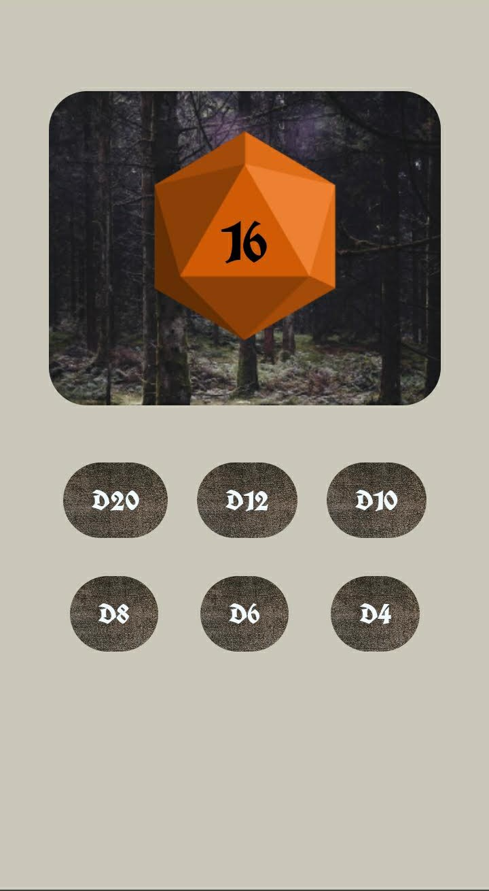

The goal for this project was to create a web based application that could function offlince once downloaded onto an ios device. There was also a focus on visual optimization for small mobile screens. (cell phones) I created an app to be used in place of dice tabletop role playing games such as Dungeons & Dragons.
When playing a tabletop roleplaying game you use a collection of differently sided dice. The aim for my application wa both to learn the concepts needed to create a mobile web application, and to streamline the tabletop rollplaying game experience by collecting all of the necessary dice into one simple application.
The initial wireframe for my idea can be seen here. From there I built out the first pass at the application. It is quite buggy and the random number does not yet work but this would be fixed whithin the coming weeks. The next version has custom dice icons that I created and switching between those icons works when clicking on each button. The beta version of the project has the number generation but all of the other graphics are the same.
The final version of the project has more customized style to refect the common Dungeons and Dragons setting the dice also shake when you hit the button for each one, and local storage has been implemented.
I believe my project is successful as I learned a lot about the process of creating a web application. I enjoyed the process of creating the final project and look forward to building upon this knowledge in future classes.